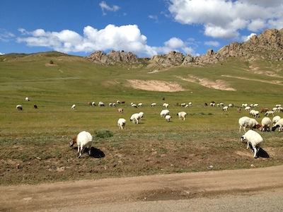
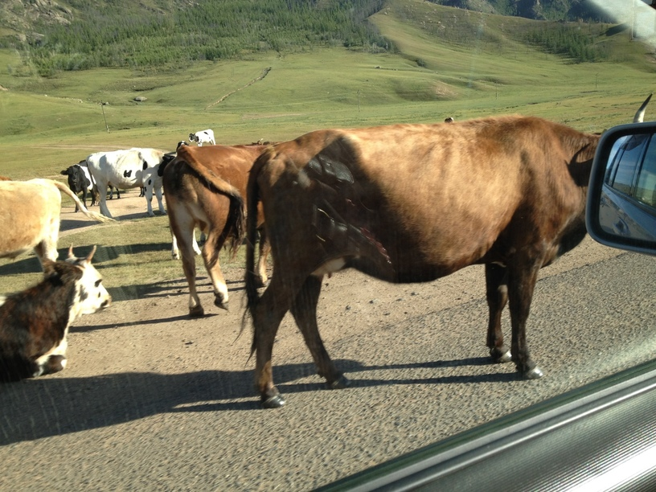

Horses, cows, sheep, goats, and camels.
For food, clothing, and shelter are procured through the waste-free use of livestock meat, milk, bones, pelts, dung, and other items, resulting in little waste.
環境省「モンゴル・遊牧による草地の持続可能な利用・管理」
 
Photo (C) 2022 ISHIDA Yuri